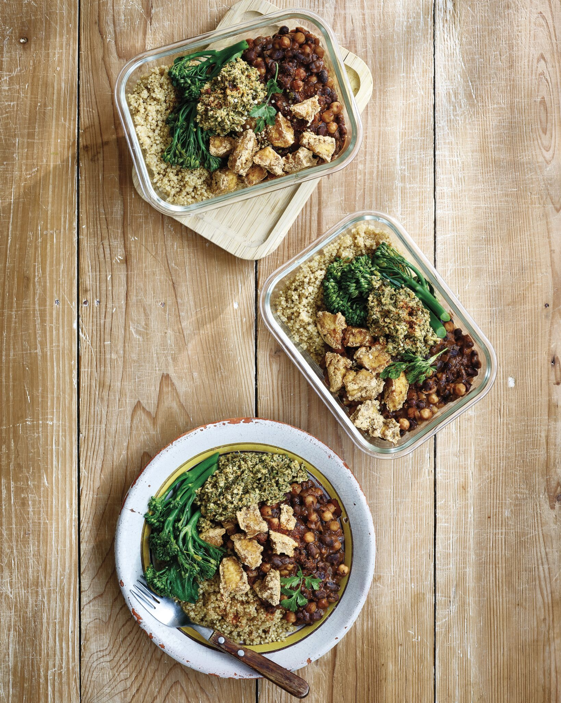

Black Bean Stew, Pumpkin Dip & Quinoa Meal Prep
Four days worth of healthy and delicious vegan meals. 60g protein per meal.

Ingredients
Stew
- 2 tbs Vegetable Oil
- 1 Red Onion, finely chopped
- 3 Cloves of Garlic, minced
- 1 Fresh Chilli, chopped fine
- 2 tsp Sea Salt
- 1 tsp Ground Coriander
- 2 tbs Chipotle Pastev
- 2 tsp Ground Cumin
- 1/2 tsp Ground Cinnamon
- 2 tsp Dried Oregano
- 2 tsp Dried Thyme
- 1 can/250g Black Beans, drained & rinsed
- 1 can/250g Chickpeas, drained & rinsed
- 2 cups/480ml Water
- 2 tbs Tomato Puree
- 2 tbs Tamari or Soy Sauce
- 1 tbs Dark Chocolate, chopped small
- Handful Chopped Coriander
Pumpkin Seed Dip 'sikilpak'
- 1 cup/120g Pumpkin Seeds
- 5 Spring Onions, trimmed
- 2 Tomatoes
- 1 Jalapeno Chilli
- 3 cloves Garlic, peeled
- 1/2 tsp Ground Cumin
- Handful Fresh Coriander
- 1/2 tsp Sea Salt
Serve with
- 500g Steamed Quinoa
- 250g Baked Tofu, optional
- 8 tbs Hemp Seeds, optional
- 500g Steamed Brocoli, optional
Step by Step Instructions
Preheat and Sauté
- Pre heat a saucepan over a medium heat & add the oil followed by the onion, garlic, chilli & salt. Sauté until softened.
Spice and mix
- Add the dried spices and herbs then cook for 3-4 minutes. Stirring often. Next, add to the pan the chipotle paste, black beans & chickpeas followed by the water, tomato puree & soy sauce.
Bean Simmer
- Place a lid on the pan & allow the beans to simmer for around 20 minutes or until the lovely liquid has thickened up.
Pumpkin Seed Dip
- Meanwhile prepare the pumpkin seed dip, simply add all the ingredients to a blender & pulse until it resembles a chunky dip.
Cook quinoa and other toppings
- Cook your quinoa & other toppings. Then just before serving, stir the chocolate & chopped coriander through the stew.
Serve
- Serve up right away or portion into your meal prep containers. The meal prep will keep for up to 5 days in the fridge. Make sure the meals are piping hot before eating. Enjoy.
I hope you enjoy this as much as I do! Be sure to comment your thoughts and I would love to hear your favorite spin and tweaks on this recipe!